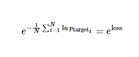

递归神经网络
此教程将展示如何在高难度的语言模型中训练循环神经网络。该问题的目标是获得一个能确定语句概率的概率模型。为了做到这一点，通过之前已经给出的词语来预测后面的词语。将使用 PTB 数据集，这是一种常用来衡量模型的基准，同时它比较小而且训练起来相对快速
模型
LSTM
模型的核心由一个 LSTM 单元组成，其可以在某时刻处理一个词语，以及计算语句可能的延续性的概率。网络的存储状态由一个 零矢量初始化 并在读取每一个词语后更新。而且，由于计算上的原因，将以 batch_size 为最小批量来处理数据
基础的伪代码就像下面这样：
lstm = rnn_cell.BasicLSTMCell(lstm_size) # 初始化 LSTM 存储状态. state = tf.zeros([batch_size, lstm.state_size]) loss = 0.0 for current_batch_of_words in words_in_dataset: # 每次处理一批词语后更新状态值. output, state = lstm(current_batch_of_words, state) # LSTM 输出可用于产生下一个词语的预测 logits = tf.matmul(output, softmax_w) + softmax_b probabilities = tf.nn.softmax(logits) loss += loss_function(probabilities, target_words)
截断反向传播
为使学习过程易于处理，通常的做法是将反向传播的梯度在（按时间）展开的步骤上照一个固定长度(num_steps)截断。 通过在一次迭代中的每个时刻上提供长度为 num_steps 的输入和每次迭代完成之后反向传导，这会很容易实现
# 一次给定的迭代中的输入占位符. words = tf.placeholder(tf.int32, [batch_size, num_steps]) lstm = rnn_cell.BasicLSTMCell(lstm_size) # 初始化 LSTM 存储状态. initial_state = state = tf.zeros([batch_size, lstm.state_size]) for i in range(len(num_steps)): # 每处理一批词语后更新状态值. output, state = lstm(words[:, i], state) # 其余的代码. # ... final_state = state
下面展现如何实现迭代整个数据集：
# 一个 numpy 数组，保存每一批词语之后的 LSTM 状态. numpy_state = initial_state.eval() total_loss = 0.0 for current_batch_of_words in words_in_dataset: numpy_state, current_loss = session.run([final_state, loss], # 通过上一次迭代结果初始化 LSTM 状态. feed_dict={initial_state: numpy_state, words: current_batch_of_words}) total_loss += current_loss
输入
在输入 LSTM 前，词语 ID 被嵌入到了一个 矢量表示 中。这种方式允许模型高效地表示词语，也便于写代码：
# embedding_matrix 张量的形状是： [vocabulary_size, embedding_size] word_embeddings = tf.nn.embedding_lookup(embedding_matrix, word_ids)
嵌入的矩阵会被随机地初始化，模型会学会通过数据分辨不同词语的意思
损失函数
使目标词语的平均负对数概率最小：

实现起来并非很难，而且函数 sequence_loss_by_example 已经有了，可以直接使用
论文中的典型衡量标准是每个词语的平均困惑度，计算式为：

同时会观察训练过程中的困惑度值
多个 LSTM 层堆叠
要想给模型更强的表达能力，可以添加多层 LSTM 来处理数据。第一层的输出作为第二层的输入，以此类推。
类 MultiRNNCell 可以无缝的将其实现：
lstm = rnn_cell.BasicLSTMCell(lstm_size) stacked_lstm = rnn_cell.MultiRNNCell([lstm] * number_of_layers) initial_state = state = stacked_lstm.zero_state(batch_size, tf.float32) for i in range(len(num_steps)): # 每次处理一批词语后更新状态值. output, state = stacked_lstm(words[:, i], state) # 其余的代码. # ... final_state = state